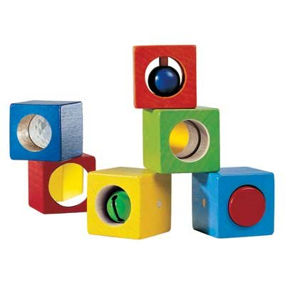

|
EDUCATION AND TRAINING
Harvard College - AB cum laude University of Rochester - MD Case Western Reserve University Hospitals - 3 year pediatric residency Boston Children's Hospital, Harvard University - 2 year fellowship in Child Development,
Director T. Berry Brazelton American Board of Pediatrics - Certified
PROFESSIONAL EXPERIENCE
Present:
Part-time Associate Professor of Clinical Pediatrics, University of Rochester Department of Pediatrics Part-time private pediatric practice
1990 - 2013:
1980-1990:
Full-time academic general pediatrics Department of Pediatrics, University of Rochester School of Medicine
Titles
- Assistant Professor of Pediatrics
- Associate Professor of Clinical Pediatrics
Duties
- Director, Pediatric Continuity Clinic
- Associate Director, General Academic Pediatric Fellowship Program
|
|
PUBLICATIONS
Dr. Foye has written chapters on behavioral and developmental pediatrics and anticipatory guidance in
primary care pediatrics in several textbooks, including:
COMMUNITY INVOLVEMENT
Dr. Foye is a past President of the Rochester Pediatric Society, and has served on the Board of Directors of Third Presbyterian Church, the Harvard-Radcliffe Club of Rochester, and the Community Child Care Center.
|